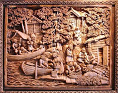

Валаам — остров в северной части Ладожского озера, самый большой в составе
Валаамского архипелага. На острове расположен посёлок Валаам,
входящий в Сортавальское городское поселение, и Валаамский
ставропигиальный мужской монастырь, являющийся памятником русского зодчества.
Название острова, возможно, происходит от финно-угорского
слова «валамо» — высокая (горная) земля.
Остров неоднократно посещали императоры Александр I и
Александр II, другие члены императорской фамилии. Также приезжал на
Валаам святитель Игнатий (Брянчанинов). Природа Валаама
вдохновляла известнейших гениев творчества и науки..
Здесь побывали художники И. И. Шишкин, Ф. А. Васильев, А. И. Куинджи,
писатели и поэты Н. С. Лесков, Ф. И. Тютчев,
А. Н. Апухтин, И. С. Шмелёв, Б. К. Зайцев,
композиторы П. И. Чайковский, А. К. Глазунов,
учёные М. Н. Миклухо-Маклай, Д. И. Менделеев и множество
других. В XIX веке во время своего
путешествия по России остров посетил Александр Дюма-отец.

К. Гоголев. «На пристани» (резьба по дереву)
Хорошо известны валаамские пейзажи, написанные И. И. Шишкиным
(«Вид Валаама», 1860), А. И. Куинджи («На острове Валаам», 1873)
и Николаем Рерихом («Святой остров», 1917). Ряд современных
художников, в частности, известный петрозаводский график
А. И. Авдышев, в 1970-х годах создал серию черно-белых линогравюр.
Приезжал на Валаам и посвящал ему свои работы мастер объёмной
резьбы по дереву, сортавальский художник Кронид Гоголев.
Свернуть